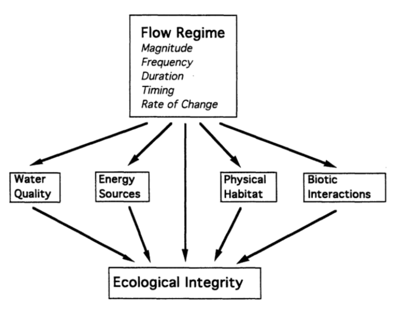

2/11/2019 Notes¶
Talking aobut the reading Dam Nation 1999 publication and broad brushstrokes on the future of dams.
NOTE: Dams change river dischares in the United State to a much greater degree than any adjustments anticipated from global climate change for the near future.
... The exact affects of climate change are unknown, but the effects of dams are known.
Natural Flow Regime¶
Term coined by N. LeRoy Poff in 1997 publications.
Characteristic (measures) of streamflow and implications:
- Magnitude
- Frequency (Flow rate vs. % excedance, See flow duration analysis fig)
- Duration
- Timing
- Rate of Change
This is a standard way to look at Magnitude and Frequency in this coupled way.
Response to altered Flow Reg
- Hydrologic Changes
- Geomorphic Changes (fluvial)
- Ecological Changes
Streamflow Management¶
When we change a river, we have started to think about how to mitigate the change’s impact. Want to achieve Environmental flow requirements.
Common approaches are:
- Focus on a species (eg. Trout)
- Establish minimum allowable flows
Limitations:
- Good ecosystem. Attempt at equivalent would be: good for a single species… BUT NOT THE SAME.
- Required habitat characteristics are not described by minimum allowable flows.
However… there are more sophisticated approaches.
Instream flow incremental methodology (use computer software, for example)
- links hydraulic and physical habitat preferences (fish)
Physical Habitat Simulation (PHABSIM), software